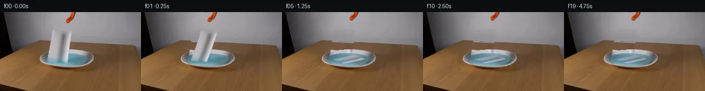
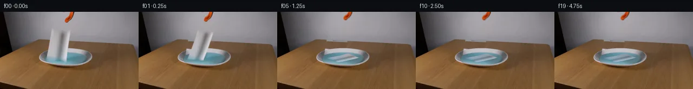
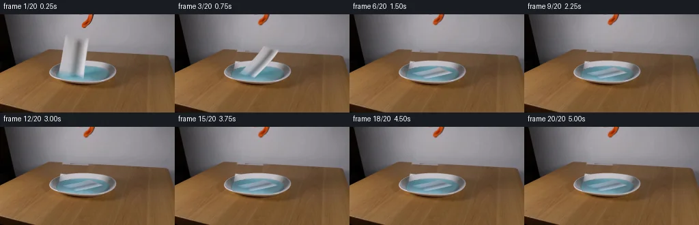
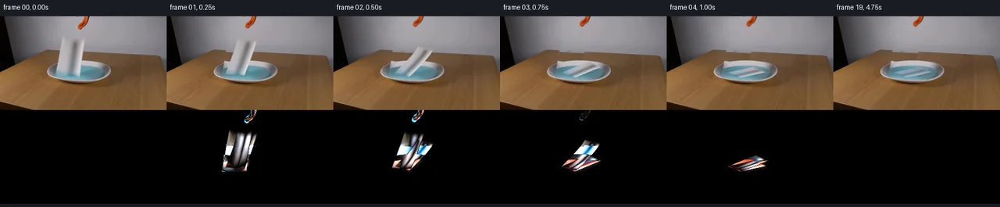

V0 · 初版
2026-11-05T14:48:45.618563+00:00 · RGB aede446c066f
![]()
Observable Generation Trace
把最终像素视频、Harness 冻结的每轮候选、真实工具事件和 Agent 自述放在同一页。可观测证据与模型自述分开标记，避免把“模型说它检查过”误当成真实工具调用。
![首帧]()
Static locked-off single-shot with fixed frame throughout filmed with constant framerate in real-time. The scene shows a realistic scientific demonstration. The scene only contains the described setup and actions. The orange-black grabber tool was holding the piece of paper towel over the dish filled with light blue liquid. The orange-black grabber releases the piece of paper towel over the dish filled with light blue liquid.
首帧显示在左侧播放器初始画面。Track 权限、隔离和 tensor 一致性来自 run manifest，而不是 METHOD.md。
默认勾选初版和最终版；可选其他版本一起同步播放。仅检查图更新的连续重复快照已合并，回退旧视频仍保留为一次修订。
Observable events
来源：events.jsonl + run manifest
此 Track 禁止读取输出图片。逐轮预览由外部 Harness 自动冻结，只用于事后审计，生成 Agent 当时看不到这些页面。
Frozen candidates
每张图来自该 round 的真实 00 / 01 / 05 / 10 / 19 帧

pixels 98a6e4f3505aa0eb · code f682c448834b0c0b
--- previous/generate.py
+++ current/generate.py
@@ -0,0 +1,268 @@
+"""Local source-pixel cloth continuation; no external models or renderers."""
+from pathlib import Path
+import json
+import math
+import base64
+import re
+import numpy as np
+import cv2
+from PIL import Image, ImageDraw
+from scipy.ndimage import gaussian_filter, map_coordinates
+from artifact_io import save
+
+ROOT = Path(__file__).resolve().parent
+W, H = 256, 144
+S = 3
+rng = np.random.default_rng(129)
+original = np.array(Image.open(ROOT / 'first_frame.png').convert('RGB'))
+Y, X = np.mgrid[:H, :W].astype(np.float32)
+
+
+def smooth(a, b, z):
+ q = np.clip((z-a)/(b-a), 0, 1)
+ return q*q*(3-2*q)
+
+
+def blend(a, b, mask):
+ return a * (1-mask[..., None]) + b * mask[..., None]
+
+# Infer locally occluded backdrop from visible pixels of the supplied image.
+base = original.astype(np.float32).copy()
+wall = base.copy()
+for y in range(27, 61):
+ left, right = 87, 147
+ for c in range(3):
+ # Row-specific interpolation preserves the supplied lighting gradient.
+ wall[y, left:right+1, c] = np.interp(np.arange(left, right+1),
+ [left, right], [original[y, left, c], original[y, right, c]])
+# The far tabletop edge is about y=52 at x=94 and y=55 at x=132.
+for y in range(50, 72):
+ for x in range(84, 138):
+ edge = 52.0 + 0.035 * (x-94)
+ if y >= edge:
+ # Nearby table texture at the same image height; avoid the dish.
+ sx = x + 49
+ sy = max(y, int(math.ceil(52 + 0.035*(sx-94))))
+ wall[y, x] = original[sy, sx]
+ elif y >= 50:
+ wall[y, x] = original[y, 143] + np.array([-0.09*(143-x)]*3)
+
+# Restore the portion of the back silver lip hidden by the vertical towel.
+outer = ((X-121)/49)**2 + ((Y-85)/17)**2
+inner = ((X-121)/43)**2 + ((Y-86)/12)**2
+for y in range(66, 96):
+ for x in range(82, 134):
+ if outer[y,x] < 1.03:
+ mirror = int(np.clip(242-x, 0, W-1))
+ wall[y,x] = original[y,mirror]
+
+# Fit smooth RGB illumination over uncontaminated blue water.
+water = (inner < 0.95) & (Y > 75)
+valid = water & ((X > 127) | ((X < 85) & (Y > 83)) | (Y > 94))
+valid &= (original[:,:,2].astype(float)-original[:,:,0] > 16)
+valid &= (original[:,:,1].astype(float)-original[:,:,0] > 15)
+xn, yn = (X-121)/43, (Y-86)/12
+basis = np.stack([np.ones_like(X),xn,yn,xn*xn,xn*yn,yn*yn], axis=-1)
+coef, *_ = np.linalg.lstsq(basis[valid], original[valid].astype(float), rcond=None)
+water_rgb = np.clip(basis @ coef, 0, 255).astype(np.float32)
+water_rgb += gaussian_filter(rng.normal(0, .5, (H,W)), .7)[...,None]
+wall = blend(wall, water_rgb, (inner < 1).astype(np.float32))
+
+# Original cloth and a small zone containing its water reflection.
+left = 96 - (Y-31)/6
+right = 131 - (Y-31)*.147
+remove = smooth(left-3,left-0.3,X) * (1-smooth(right+0.5,right+3,X))
+remove *= smooth(27,34,Y) * (1-smooth(92,96,Y))
+# Remove only a faint cast shadow immediately behind the hanging sheet.
+cast = np.exp(-((X-132)/9)**2 - ((Y-47)/12)**2) * .24
+cast *= (Y>32)&(Y<62)&(X>128)
+remove = np.maximum(remove, cast)
+base = blend(base, wall, remove)
+
+# Tool tip: use its supplied orange pixels and dark outline as one layer.
+tool_poly = np.array([[127,0],[138,0],[137,7],[134,12],[130,16],
+ [126,20],[121,22],[118,20],[118,16],[121,11],[126,7]])
+tool_m = np.zeros((H,W),np.uint8)
+cv2.fillPoly(tool_m,[tool_poly],255)
+# Preserve only the actual tool, based on its red-dominant color and dark border.
… diff truncated; 181 more lines …
pixels e0db1551a4d95b96 · code 89fa40e00ef1f4f8
--- previous/generate.py
+++ current/generate.py
@@ -31,10 +31,12 @@
wall = base.copy()
for y in range(27, 61):
left, right = 87, 147
- for c in range(3):
- # Row-specific interpolation preserves the supplied lighting gradient.
- wall[y, left:right+1, c] = np.interp(np.arange(left, right+1),
- [left, right], [original[y, left, c], original[y, right, c]])
+ # The unobstructed row above the towel records the wall's broad light peak.
+ # Estimate its change with height from two unobstructed side regions.
+ ld = np.median(original[y,75:89].astype(float)-original[25,75:89],axis=0)
+ rd = np.median(original[y,155:180].astype(float)-original[25,155:180],axis=0)
+ w = np.clip((np.arange(left,right+1)-82)/85,0,1)[:,None]
+ wall[y,left:right+1] = original[25,left:right+1] + ld*(1-w) + rd*w
# The far tabletop edge is about y=52 at x=94 and y=55 at x=132.
for y in range(50, 72):
for x in range(84, 138):
@@ -48,12 +50,13 @@
wall[y, x] = original[y, 143] + np.array([-0.09*(143-x)]*3)
# Restore the portion of the back silver lip hidden by the vertical towel.
-outer = ((X-121)/49)**2 + ((Y-85)/17)**2
-inner = ((X-121)/43)**2 + ((Y-86)/12)**2
+outer = ((X-121)/49)**2 + ((Y-85)/18)**2
+inner = ((X-121)/43)**2 + ((Y-86.8)/11.2)**2
for y in range(66, 96):
for x in range(82, 134):
if outer[y,x] < 1.03:
- mirror = int(np.clip(242-x, 0, W-1))
+ # x<128 in this band is contaminated by the original upright sheet.
+ mirror = int(np.clip(242-x, 128, W-1))
wall[y,x] = original[y,mirror]
# Fit smooth RGB illumination over uncontaminated blue water.
@@ -119,6 +122,7 @@
by = 91 - .7*settling
topx = bx + 9.5*math.cos(theta) + 43*math.sin(theta)
topy = by - 59*math.cos(theta) - 9.5*math.sin(theta)
+ topy += 2.5*math.sin(theta)*math.cos(theta)
acrossx = 17.5 - 7.5*math.sin(theta)
acrossy = 0 + 4.4*math.sin(theta)
buckle = math.sin(theta)*math.exp(-((t-.5)/.32)**2)pixels e0db1551a4d95b96 · code 89fa40e00ef1f4f8
No generate.py text change in this frozen round.
Final visual checks
Harness 保存的最终产物


Agent claims
以下文字由生成 Agent 撰写，不等同于工具证据
Only the supplied first frame and prompt are scene inputs. The initial image was visible in the user attachment; subsequent output inspection will use local code and numeric checks only.
The 256 × 144 image has a stationary camera looking down across a brown wood tabletop against a gray wall. The tabletop/wall boundary passes near (74, 51) and (246, 60). The shallow oval dish occupies approximately x=72–170, y=68–103; the light blue liquid occupies an ellipse centered near (121, 86), with radii about (44, 12). The near silver rim is around y=97–101. The folded, hanging paper towel extends from approximately (94, 31)–(131, 34) to (85, 87)–(122, 93). It has a bright outer fold, a dark central vertical crease, and softer edges. The orange and black grabber is partially cropped at the upper edge, x≈119–138, y≈0–20. The towel bottom is already very close to the liquid, so the released towel should contact it promptly rather than undergo a long free fall.
The action will be a small release/retraction of the grabber, downward movement and buckling of the towel, collapse toward the right into the dish, small damped surface ripples, and gradual blue-gray wetting. The floating sheet remains visibly identifiable; the liquid stays in the dish, with no added objects, camera movement, or cuts. The final sheet will rest approximately within x=86–155, y=77–96. Source texture will be warped with a deforming cloth mesh; hidden wall, tabletop, dish rim, and liquid will be restored locally using numerical interpolation and analytic shading.
| Frame | Time (s) | Planned event |
|---|---|---|
| 00 | 0.00 | Exact original RGB image. |
| 01 | 0.25 | Grabber tip retracts slightly; towel base contacts the liquid, upper portion starts leaning right. |
| 02 | 0.50 | Towel buckles and tips toward the right; lower fold spreads onto water. |
| 03 | 0.75 | Most of the towel settles onto the surface; contact ripples spread inside the dish. |
| 04 | 1.00 | Final raised fold falls flat; small surface oscillation. |
| 05 | 1.25 | Wetting advances from the immersed lower edge; ripples weaken. |
| 06 | 1.50 | Paper darkens slightly and takes on a pale blue-gray tint. |
| 07 | 1.75 | Small residual settling of folds. |
| 08 | 2.00 | Dampened water motion. |
| 09 | 2.25 | Saturation spreads across most of the towel. |
| 10 | 2.50 | Towel remains supported by the water and shallow dish. |
| 11 | 2.75 | Very small settling movement. |
| 12 | 3.00 | Ripples nearly disappear. |
| 13 | 3.25 | Wet towel settles with persistent soft creases. |
| 14 | 3.50 | Nearly still liquid and towel. |
| 15 | 3.75 | Subtle remaining wetting. |
| 16 | 4.00 | Stable wet sheet in dish. |
| 17 | 4.25 | Almost stationary end state. |
| 18 | 4.50 | Stable end state. |
| 19 | 4.75 | Wet folded towel resting in the light blue liquid; grabber above it. |
Time is sampled at a fixed 4 fps for 20 frames, giving a 5-second playback. The release and collapse happen in real time during the first second.
This continuation was made entirely with local Python pixel operations using the supplied first_frame.png and prompt.txt. No network, external reference images, AI models, rendering engines, or subagents were used. NumPy, Pillow, SciPy, and OpenCV perform numerical interpolation, textured triangle warping, filtering, compositing, and PNG writing. generate.py reproduces the deliverables.
The towel texture comes from a slanted sampling strip through the original towel, from approximately x=96–131 at y=31 to x=86–122 at y=91. A 49 × 85 parameter grid describes this strip. A piecewise affine triangle mesh changes the towel's pose: the lower end contacts the liquid, the upper end tips right, the middle buckles briefly, and the whole sheet settles into a foreshortened shape inside the dish. Rasterization uses three times the output resolution and premultiplied color downsampling for smooth edges. This is an authored kinematic approximation of cloth motion, rather than a full cloth or fluid solver.
The hidden backdrop is reconstructed locally. The unobstructed wall row above the towel supplies its broad illumination pattern, adjusted using visible wall pixels on each side. Nearby pixels supply the tabletop texture. Visible silver rim pixels from x≥128 supply the hidden rear lip. A quadratic RGB surface fitted to 641 uncontaminated blue water pixels reconstructs the liquid underneath the original towel and its reflection. The second revision excluded towel-contaminated rim samples and refined the wall illumination and dish ellipse.
The original orange and black tool tip is extracted with a local color mask, including its dark border, and moves about 2.8 pixels right and 4.5 pixels upward during release. The final position is held. Towel wetting follows a gradually advancing moisture front from its lower end, reducing brightness and adding a pale blue tint. Some original vertical crease shading is softened as the sheet becomes horizontal. Small analytic ripples and a soft contact shadow stay within the water surface and decay. The rest of the scene uses the supplied stationary background.
frames/00.png–frames/19.png: twenty RGB images at 256 × 144, sampled at 4 fps. Frame 00 is an exact RGB copy of the initial image.pixels.npz: key pixels, shape (144, 256, 20), dtype uint32. Each value is packed as 0xRRGGBB.index.html: standalone 4 fps canvas player with playback, replay, and frame seeking. Its embedded first frame and delta packets reconstruct all twenty tensor frames exactly.inspection.png: eight-frame contact sheet.transition_check.png: selected release and settling frames, plus amplified adjacent-frame differences.OBSERVATION.md: measurements and twenty-frame event plan, written before generation code.numeric_checks.json: reproducible format, encoding, motion, and pose measurements.All twenty PNG files were decoded locally and checked for exact equality with both generated RGB arrays and the packed tensor. All twenty embedded player frames were decoded and checked against the tensor. There are 20 frames at 4 fps, for a 5-second playback; sample times run from 0.00 to 4.75 seconds. Frame 00 equals first_frame.png exactly. No pixels change in the checked distant background (x<68, x>177, or y>107).
Local numeric inspection found one connected opaque towel region with zero internal holes at 0.25, 0.50, 0.75, 1.00, and 4.75 seconds. No opaque towel pixels lie below y=97 in those samples. Its projected alpha area reduces from about 1,640 pixels at 0.25 seconds to 499 pixels after settling. The final cloth mesh lies within x=90–153 and y=76.4–94.7. Average adjacent-frame RGB change drops from 2.17 levels during release to 0.00103 levels at the end, consistent with settling and diminishing wetting.
The initial scene was observed through the user-provided visual attachment. Generated outputs and contact sheets were inspected only through local code and numeric measurements; no image Read/View tools were used and no visual review of generated output is claimed. Hidden surface reconstruction, deformation, wetting, and ripples are approximations based on the single supplied frame.